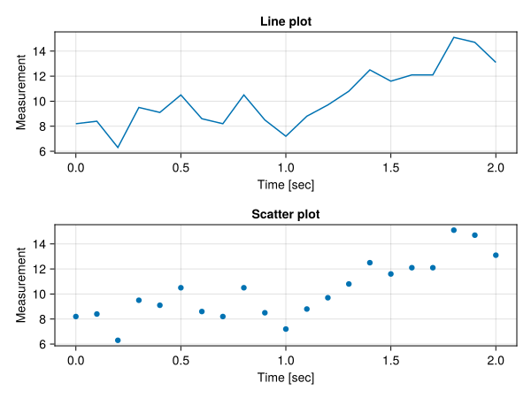
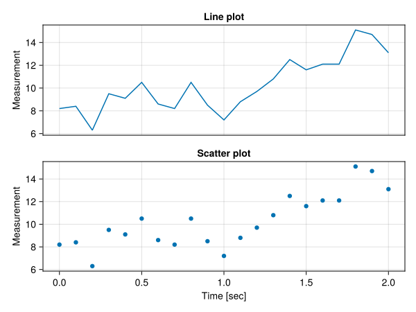
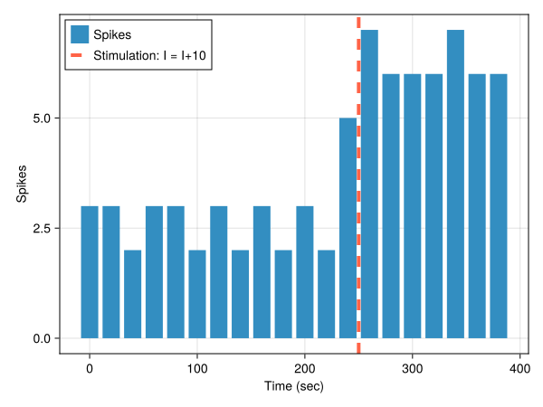

Plotting with Makie
Jupyter Notebook: Please work on
intro_plot.ipynb.
Introduction
Makie [1] is a plotting ecosystem based in Julia. It comes with multiple backends for rendering and displaying plots. For this course we will be using CairoMakie as it has a lot of features for 2D static plots and most computers should support it as it only requires a CPU and no GPU. Makie has a great Getting Started page. We will make use of this tutorial to introduce some basic plotting functions and labelling options.
Learning goals:
- Design layouts with multiple axes in figures.
- Use Makie's functionality to plot neuron-specific figures.
Plotting Layouts
We'll now see how to create layouts of multiple subplots within a single window. We'll use the same data from the Makie tutorial linked above.
using CairoMakie
seconds = 0:0.1:2
measurements = [8.2, 8.4, 6.3, 9.5, 9.1, 10.5, 8.6, 8.2, 10.5, 8.5, 7.2,
8.8, 9.7, 10.8, 12.5, 11.6, 12.1, 12.1, 15.1, 14.7, 13.1]
fig = Figure(title="Line & Scatter layout")
axs = [Axis(fig[1,1], title = "Line plot", xlabel = "Time [sec]", ylabel = "Measurement"),
Axis(fig[2,1], title = "Scatter plot", xlabel = "Time [sec]", ylabel = "Measurement")]
lines!(axs[1], seconds, measurements)
scatter!(axs[2], seconds, measurements)
fig
Note: Plot functions in Makie also work without defining a
Figureand anAxisobject explicitly. E.g. plotting withlines(seconds, measurements)orscatter(seconds, measurements). However in this case we won't have all the customization options for the plot axes readily available.
Plotting layouts in Makie is quite intuitive. We can treat the Figure object as a matrix of (sub)plot positions. In the example above we organized the two plots on a single column on positions fig[1,1] and fig[2,1] (remember that Julia is an 1-index language!). We then input these grid positions of the figure to the respective Axis object to define the 2D axes which will contain each plot. When defining an Axis there are multiple options to affect its appearance and alignment, see the Axis documentation page for more details. We can also change an Axis after it has been constructed. For instance we could hide the x-axis label and ticks on the top plot above, since it is a duplicate of the x-axis of the bottom plot. We will keep the grid lines though, because it is easier to read the x-axis values this way.
hidexdecorations!(axs[1], grid=false) ## `grid=false` avoids hiding the x grid lines
# Now we can display the figure again with the updated axes
fig
Plotting Spikes
We will now combine the Makie and the Differential Equations ecosystems to start plotting more meaningful results after simulating neuronal models. We will use the Izhikevich model from the last section in its fast-spiking regime. Besides the spiking event, we will add a second event that increases the external current flowing into the neuron at a specific time during simulation. We will count and plot the spikes that the neuron emits within time windows of a given width both before and after the change in external current.
using ModelingToolkit
using ModelingToolkit: t_nounits as t, D_nounits as D
using OrdinaryDiffEqDefault
@variables v(t)=-65 u(t)=-13
@parameters a=0.1 b=0.2 c=-65 d=2 I=10 ## Parameters for fast spiking.
eqs = [D(v) ~ 0.04 * v ^ 2 + 5 * v + 140 - u + I,
D(u) ~ a * (b * v - u)]
spike_threshold = 30
t_bigger_stimulation = 250
spike_event = (v > spike_threshold) => [u ~ u + d, v ~ c]
stimulation_event = [t_bigger_stimulation] => [I ~ I + 10]
@named izh_system = ODESystem(eqs, t, [v, u], [a, b, c, d, I]; discrete_events = [spike_event, stimulation_event])
izh_simple = structural_simplify(izh_system)
u0 = [v => -65.0, u => -13.0]
tspan = (0.0, 400.0)
izh_prob = ODEProblem(izh_simple, u0, tspan)
izh_sol = solve(izh_prob)
# retrieve the voltage potential variable from solution
V_izh = izh_sol[v]
# retrieve all stimulation timesteps that the integrator took to solve the ODEProblem
timepoints = izh_sol.t
# set a time window width for spike counting
t_window = 20
# split time into bins of size `t_window`
t_range = first(tspan):t_window:last(tspan)
# initialize an empty vector to hold the spike values.
spikes = zeros(length(t_range) - 1)20-element Vector{Float64}:
0.0
0.0
0.0
0.0
0.0
0.0
0.0
0.0
0.0
0.0
0.0
0.0
0.0
0.0
0.0
0.0
0.0
0.0
0.0
0.0To find spikes we need to
- loop over the timepoints at which every time window begins
- find the indices of timepoints that fall within the current time window
- count the number of spikes within the same window
for i in eachindex(t_range[1:end-1])
idxs = findall(t -> t_range[i] <= t <= t_range[i+1], timepoints)
spikes[i] = count(V_izh[idxs] .> spike_threshold) ## counts the number of True elements in a Boolean vector
end
fig = Figure()
ax = Axis(fig[1,1], xlabel="Time (sec)", ylabel="Spikes")
# plot spikes for each time window
barplot!(ax, t_range[1:end-1], spikes, label="Spikes")
# plot a vertical line to note when the change in current `I` occurred
vlines!(ax, [t_bigger_stimulation]; color=:tomato, linestyle=:dash, linewidth=4, label="Stimulation: I = I+10")
# display the legend
axislegend(position = :lt)
fig
References
- [1] Danisch et al., (2021). Makie.jl: Flexible high-performance data visualization for Julia. Journal of Open Source Software, 6(65), 3349, https://doi.org/10.21105/joss.03349
- [2] https://docs.makie.org/stable/
This page was generated using Literate.jl.